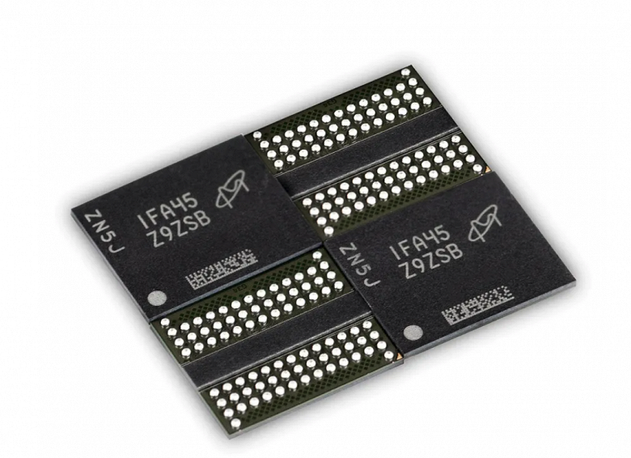

Оперативная память DDR5 с частотой свыше 10 ГГц. Такую уже пообещала компания Netac
 Но неясно, когда такая память станет доступна.
Китайский производитель оперативной и флеш-памяти Netac заявил,
что в будущем предложит геймерскую память DDR5 с эффективной частотой свыше 10 ГГц.
Сейчас Netac уже получила первую партию микросхем DDR5 от Micron, так что уже может разрабатывать непосредственно модули ОЗУ.
При этом стоит отметить, что эффективная частота DDR5 стартует с 4800 МГц, то есть Netac придётся повысить показатель более чем вдвое.
Впрочем, на примере DDR4 мы видим, что невозможным это называть не стоит, так как эта память стартовала с 2133 МГц, а сейчас частоты достигают 5333 МГц и выше.
Издание ITHome сообщает, что китайская компания
планирует инвестировать в исследования и разработку памяти стандарта DDR5, которая cможет работать на частоте 10 ГГц и выше.
Частоты DDR5 начинаются от 4,8 ГГц, а максимальной для модулей первого поколения считается 8,4 ГГц.
Первым модулем стандарта DDR5 от Netac стал Micron Z9ZSB ёмкостью 16 ГБ (2х8) и таймингами CL40 (40-40-40-77).
Задержки у памяти DDR5 значительно выше, чем у DDR4 (нормальными показателями считаются 16-18-18-36).
Среди энтузиастов существует точка зрения, что в играх новый тип памяти первое время не будет давать
значимого прироста производительности несмотря на значительный прирост скорости.

Первыми процессорами с поддержкой DDR5 станут Intel 12-го поколения Alder Lake, анонс которых состоится во второй половине 2021 года.
А вот от AMD подробностей пока что почти нет — известно, что компания готовит новый сокет для масштабного обновления платформы,
но произойдёт ли анонс в этом или следующем году, пока не ясно.
Планам AMD сейчас сильно мешает кризис повышенного спроса на фабриках TSMC, так как своего производства у «красных», в отличие от Intel, нет.
Источник: https://www.ixbt.com/news/2021/04/16/ddr5-10-netac.html
Смотрите также: